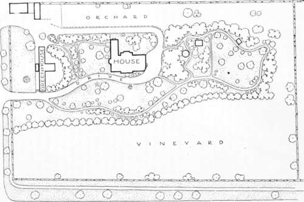

Chapter III. On Wood And Plantations
Description
This section is from the book "Landscape Gardening", by Andrew Jackson Downing. Also available from Amazon: Landscape Gardening.
Chapter III. On Wood And Plantations
"He gains all points, who pleasingly confounds, Surprises, varies, and conceals the bounds. Calls in the country, catches opening glades, Joins willing woods, and varies shades from shades; Now breaks, or now directs the intending lines; Paints as you plant, and, as you work, designs".
Pope.
AMONG all the materials at our disposal for the embellishment of country residences, none are at once so highly ornamental, so indispensable, and so easily managed, as trees, or wood. We introduce them in every part of the landscape, — in the foreground as well as in the distance, on the tops of the hills and in the depths of the valleys. They are, indeed, like the drapery which covers a somewhat ungainly figure, and while it conceals its defects, communicates to it new interest and expression.
A tree, undoubtedly, is one of the most beautiful objects in nature. Airy and delicate in its youth, luxuriant and majestic in its prime, venerable and picturesque in its old age, it constitutes in its various forms, sizes, and developments the greatest charm and beauty of the earth in all countries. The most varied outline of surface, the finest combination of picturesque materials, the stateliest country house would be comparatively tame and spiritless, without the inimitable accompaniment of foliage. Let those who have passed their whole lives in a richly wooded country, — whose daily visions are deep leafy glens, forest clad hills and plains luxuriantly shaded, — transport themselves for a moment to the desert, where but a few stunted bushes raise their heads above the earth, or those wild steppes where the eye wanders in vain for some "leafy garniture" — where the sun strikes down with parching heat, or the wind sweeps over with unbroken fury, and they may, perhaps, estimate, by contrast, their beauty and value.
Fig. 8. Plan of Mr. Downing's Home Grounds, Nlavbukgh, N. Y.
We are not now to enumerate the great usefulness of trees, — their value in the construction of our habitations, our navies, the various implements of labor, — in short, the thousand associations which they suggest as ministering to our daily wants; but let us imagine the loveliest scene, the wildest landscape, or the most enchanting valley, despoiled of trees, and we shall find nature shorn of her fair proportions, and the character and expression of these favorite spots almost entirely destroyed.
Wood, in its many shapes, is then one of the greatest sources of interest and character in landscapes. Variety, which we need scarcely allude to as a fertile source of beauty, is created in a wonderful degree by a natural arrangement of trees. To a pile of buildings, or even of ruins, to a group of rocks or animals, they communicate new life and spirit by their irregular outlines, which, by partially concealing some portions, and throwing others into stronger light, contribute greatly to produce intricacy and variety, and confer an expression, which, without these latter qualities, might in a great measure be wanting. By shutting out some parts, and inclosing others, they divide the extent embraced by the eye into a hundred different landscapes, instead of one tame scene bounded by the horizon.
The different seasons of the year, too, are inseparably connected in our minds with the effects produced by them on woodland scenery. Spring is joyous and enlivening to us, as nature then puts on her fresh livery of green, and the trees bud and blossom with a renewed beauty, that speaks with a mute and gentle eloquence to the heart. In summer they offer us a grateful shelter under their umbrageous arms and leafy branches, and whisper unwritten music to the passing breeze. In autumn we feel a melancholy thoughtfulness as " We stand among the fallen leaves" and gaze upon their dying glories. And in winter we see in them the silent rest of nature, and behold in their leafless spray, and seemingly dead limbs, an annual type of that deeper mystery — the deathless sleep of all being.
By the judicious employment of trees in the embellishment of a country residence, we may effect the greatest alterations and improvements within the scope of Landscape Gardening. Buildings which are tame, insipid, or even mean in appearance, may be made interesting, and often pictur-escpie, by a proper disposition of trees. Edifices, or parts of them that are unsightly, or which it is desirable partly or wholly to conceal, can readily be hidden or improved by wood; and walks and roads, which otherwise would be but simple ways of approach from one point to another, are, by an elegant arrangement of trees on their margins, or adjacent to them, made the most interesting and pleasing portions of the residence.
In geometric gardening, trees disposed in formal lines, exhibit as strongly art or design in the contriver, as regular architectural edifices; while, in a more elevated and enlightened taste, we are able to dispose them in our pleasure-grounds and parks, around our houses, in all the variety of groups, masses, thicket, and single trees, in such a manner as to rival the most beautiful scenery of general nature; producing a portion of landscape which unites with all the comforts and conveniences of rural habitation, the superior charm of refined arrangement, and natural beauty of expression.
If it were necessary to present any other inducement to the country gentleman to form plantations of trees, than the great beauty and value which they add to his estate, we might find it in the pleasure which all derive from their cultivation. Unlike the pleasure arising from the gratification of our taste in architecture, or any other of the arts whose productions are offered to us perfect and complete, the satisfaction arising from planting and rearing trees is never weakened. "We look," says a writer, "upon our trees as our offspring; and nothing of inanimate nature can be more gratifying than to see them grow and prosper under our care and attention, — nothing more interesting than to examine their progress, and mark their several peculiarities. In their progress from plants to trees, they every year unfold new and characteristic marks of their ultimate beauty, which not only compensate for past cares and troubles, but like the returns of gratitude, raise a most delightful train of sensations in the mind, so innocent and rational, that they may justly rank with the most exquisite of human enjoyments".
"Happy is he, who in a country life Shuns more perplexing toil and jarring strife; Who lives upon the natal soil he loves, And sits beneath his old ancestral groves".
To this, let us add the complacent feelings with which a man in old age may look around him and behold these leafy monarchs, planted by his boyish hands and nurtured by him in his youthful years, which have grown aged and venerable along with him; "A wood coeval with himself he sees, And loves his own contemporary trees".
Continue to:
- prev: Beauties And Principles Of The Art. Part 6
- Table of Contents
- next: On Wood And Plantations. Part 2